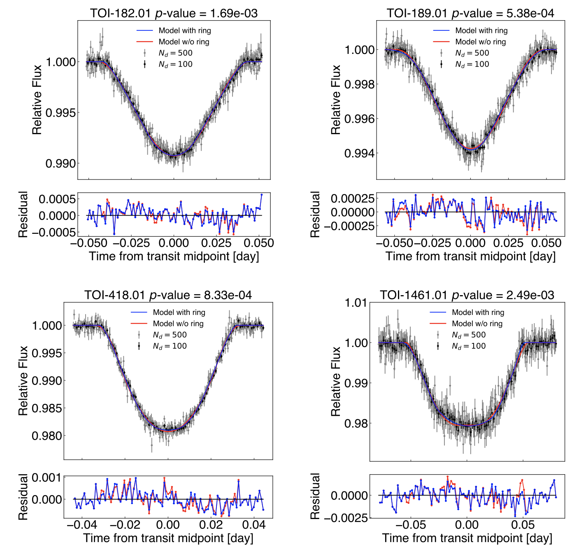
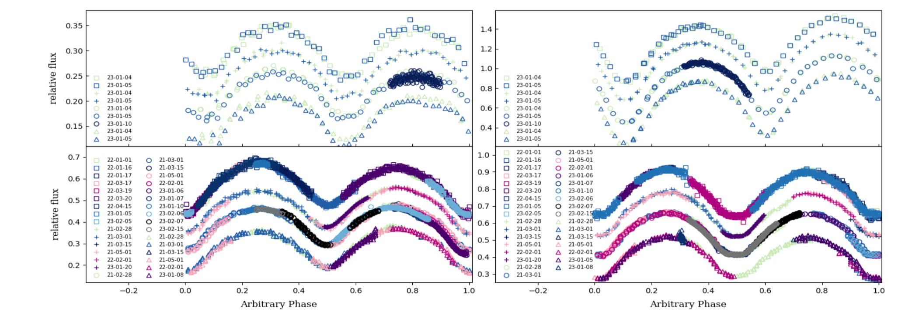
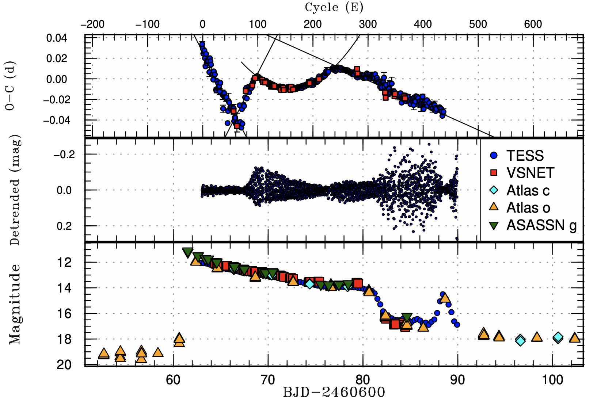

Welcome TESS followers to our latest news bulletin!
This week, we are looking at three recent papers from the archive. Enjoy!
First, we highlight a search for exoplanetary ring systems around TESS planet candidates. While rings are common in the Solar System, and have been observed around both the gas giants and smaller bodies like asteroids, no exoplanetary ring system has been confirmed to date. Thus planetary rings represent an open frontier in extrasolar astrophysics, and discovering such structures would advance our understanding of the processes responsible for the formation, orbital dynamics, and evolution of planets beyond the Solar System.
Next, we outline a paper describing a study of four contact binary stars. These systems represent a stage in stellar evolution where two stars share a common envelope, making them highly valuable for understanding the physics of close binary systems and their evolutionary pathways. Contact binaries serve as laboratories for testing theories of stellar physics under rather extreme conditions, and provide vital insights into mass transfer processes, common envelope evolution, stellar mergers, etc.
The third paper presents observations of the cataclysmic variable ASASSN-24hd. The target represents an important bridge between two major types of dwarf nova systems: WZ Sge-type and SU UMa-type dwarf novae. ASASSN-24hd provides important insight into how these two classes of cataclysmic variables are connected, and is the first known WZ Sge-type dwarf nova fully covered by TESS observations. This allows astronomers to study the complete evolution of superhumps throughout the outburst event with unprecedented detail.
Search for Exoplanetary Ring Systems with TESS (Umetani et al. 2025) :
Umetani et al. (2025) present a comprehensive search for exoplanetary rings using TESS data, analyzing 308 targets selected by the expected signal-to-noise ratio. The authors developed a sophisticated two-step data processing pipeline to reduce instrumental and stellar noise, enabling precise comparisons between ringless and ringed transit models. Their selection criteria were optimized for ring detectability, assuming favorable ring orientations and focusing on giant, close-in planet candidates around nearby bright stars. Umetani et al. (2025) compared fitting results from both ringless and ringed models using F-statistics, with a significance threshold set at a p-value < 0.0027 (corresponding to 3σ limit). Their analysis identified six systems with statistical preference for ringed models, including TOI-182.01 (p-value = 1.69×10⁻³), TOI-189.01 (5.38×10⁻⁴), TOI-418.01 (8.33×10⁻⁴), TOI-1461.01 (2.49×10⁻³), TOI-2126.01 (3.94×10⁻⁴), and TOI-2154.01 (4.52×10⁻⁴). However, visual inspection of these candidate signals revealed no conclusive evidence for ring features in any of the light curves. Assuming favorable ring orientations, Umetani et al. (2025) established 3σ upper limits on ring sizes for 125 objects, arguing that rings with outer radii larger than 1.8 times the planetary radii occur at rates lower than 2%. The authors also investigated whether potential transit depth variations can be caused by ring precession, and identified 10 promising targets in TESS data as well as 13 in Kepler data. Umetani et al. (2025) suggest that this alternative technique could potentially detect larger ring signals in longer-period planets compared to the standard transit modeling approach. Additionally, the authors note that the apparent absence of definitive ring detections is consistent with the expected tidal alignment due to damping of the ring obliquity.
Exploring Contact Binaries: Observational Analysis of four W Uma Binaries Using Photometry and Spectroscopy (Panchal et al. 2025) :
Panchal et al. (2025) present a detailed study of four W Ursae Majoris-type contact binaries, J080510.1+141528 (J0805a), J080516.3+143138 (J0805b), J143358.7+053953 (J1433), and J143458.4+054143 (J1434), combining photometric observations from TESS and the 1.3-m Devasthal Fast Optical Telescope, as well as spectroscopic data from the LAMOST survey. The authors found significant deviations from linear ephemeris for two of the studied systems, with J0805b showing a secular increase of 4.2 (± 0.1) ×10⁻⁷ days/yr and J1433 displaying a period decrease of -1.1 (± 0.1) ×10⁻⁶ days/yr. Through detailed analysis of timing variations and observed minus calculated measurements, Panchal et al. (2025) demonstrate that these period changes likely result from mass transfer between the respective binary components rather than gravitational wave emission or magnetic braking, and calculated mass transfer rates of -1.56×10⁻⁶ MSun/year for J0805b and -7.95×10⁻⁷ MSun/year for J1433, respectively. Additionally, the authors performed photometric modeling of the targets’ lightcurves using PHOEBE, indicating that all systems have mass ratios smaller than 0.5, three of the systems are inclined with respect to the line of sight by more than 79°, while the inclination angle of the fourth system (J1433) is about 73°. Three of the targets are classified as A-subtype contact binaries (J0805a, J1433, and J1434), whereas J0805b is identified as a W-subtype system. Additionally, Panchal et al. (2025) used Gaia DR3 measurements to determine the absolute parameters for all systems, finding that the primary masses range from ~0.6 to ~2.2 MSun, the secondary masses from 0.3 to 1.9 MSun, with J1433 being the most massive system at ~3.2 MSun, and the corresponding fill-out factors vary from 0.5% to 42%, indicating different stages of contact between the respective binary components. The author’s spectroscopic analysis of the LAMOST spectra reveals evidence of chromospheric activity in J1433, with excess emission detected in the Hα and Hβ regions. The authors attribute these findings to the presence of starspots on the stellar surfaces, which they modeled using configurations with both cooler and hotter spots.
ASASSN-24hd; a dwarf nova bridging WZ Sge-type and SU UMa-type superoutbursts (Tampo et al. 2025) :
The superoutburst of ASASSN-24hd was first detected on December 17, 2024, reaching a maximum brightness of g = 11.1 mag before fading over a period of about 19.5 days. The system exhibited an outburst amplitude of 8.0 magnitudes, with an absolute magnitude at maximum of 3.6 magnitudes (without considering extinction). Tampo et al. (2025) performed a detailed period analysis of TESS data, and determined an early superhump period of 0.05711 days, followed by stage-A ordinary superhumps at 0.05919 days. Based on the superhump period relationships, the authors calculate a mass ratio of the system of 0.098. Additionally, Tampo et al. (2025) found that stage-B superhumps showed a period change of 11.2×10⁻⁵ per cycle, and the stage-C superhumps have a period of 0.05791 days. Furthermore, the authors note that one of the more intriguing aspects of ASASSN-24hd is its remarkable similarity to the 2010 superoutburst of the puzzling dwarf nova V585 Lyr observed by Kepler. In particular, both systems showed unusual characteristics including a long waiting time (~5-7 days) before the stage A-B superhump transition, lack of precursor outbursts, similar outburst durations, decline rates, mini-rebrightenings, as well as single short re-brightening episodes. The key difference lies in their classification: V585 Lyr is traditionally considered an SU UMa-type dwarf nova with a ~2.3-year superoutburst cycle with normal outbursts, whereas ASASSN-24hd displays typical WZ Sge characteristics including early superhumps and a superoutburst cycle exceeding 10 years. This comparison suggests that the boundary between these two dwarf nova types may be more nuanced than previously understood, potentially depending on factors such as quiescence viscosity or inner disk truncation. The detailed TESS observations reveal that superhump transitions occur rapidly (within 2-3 orbital cycles), with double-peaked profiles appearing during the latter half of stage-B superhumps before returning to single-peaked profiles during rapid decline, and emphasize the importance of studying objects at the boundary between different types of cataclysmic variables.

Fig. 1: Taken from Umetani et al. (2025). TESS lightcurves of 4 of the 6 close-in, transiting giant planet candidates observed by TESS that satisfy the authors’ 3-sigma detection threshold (p-value < 0.0027) for the potential presence of planetary rings, along with the corresponding best-fit models.

Fig. 2: Taken from Panchal et al. (2025). Phase-folded lightcurves of the four W-UMa contact binaries studied by the authors.

Fig. 3: Taken from Tampo et al. (2025). Upper panel: Observed minus Calculated diagram of the superhump maxima of ASASSN-24hd. Middle panel: Detrended TESS data. Lower panel: Overall optical lightcurve during outburst.